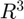

Exercice 1, Base orthornormée adaptée à un plan
Contents
1.1)
Pour cette partie on va procéder en 3 étapes.
1 - Calculer le vecteur v1 comme (P2-P1) et le vecteur x2 comme
(P3-P1), pour obtenir une famille {v1, x2} de vecteurs du plan.
2 - Effectuer l'algorithme de Graam-Smidt sur cette famille pour
obtenir 2 vecteurs orthogonaux v1 et v2, qu'on va normer en u1 et u2
3 - On prend simplement n comment étant le produit vectoriel de
u_1 et u_2. On aura donc que n sera de norme 1 et orthognal aux
deux autres vecteurs.Or une famille de 3 vecteurs (dont aucun n'est nul) orthonormés de  est une base de .
function [u1, u2, n] = BaseR3(P1, P2, P3) v1 = P2-P1; x2 = P3-P1; projV1_x2 = (dot(x2, v1)/(dot(v1, v1)))*v1; v2 = x2 - projV1_x2; % Graam-Smidt on enlève à x2 "ses composantes colinéaires à v1", pour obtenir un vecteur orthogona à v1 u1 = v1 / norm(v1); u2 = v2 / norm(v2); % on normalise n = cross(u1, u2); % sa norme est norm(u1)*norm(u2)*sin(angle(u1,u2)) = 1*1*sin(pi/2) = 1 end
Not enough input arguments.
Error in BaseR3 (line 20)
v1 = P2-P1; x2 = P3-P1;